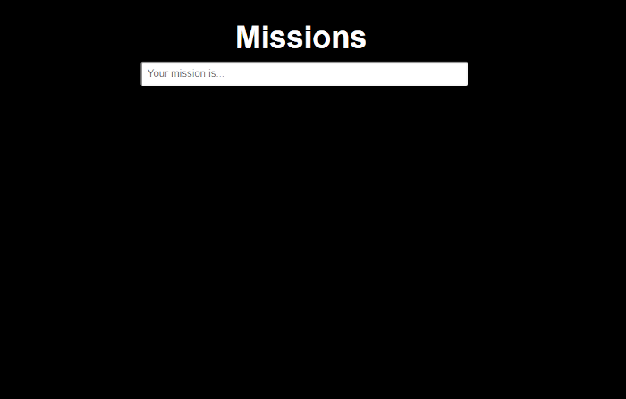
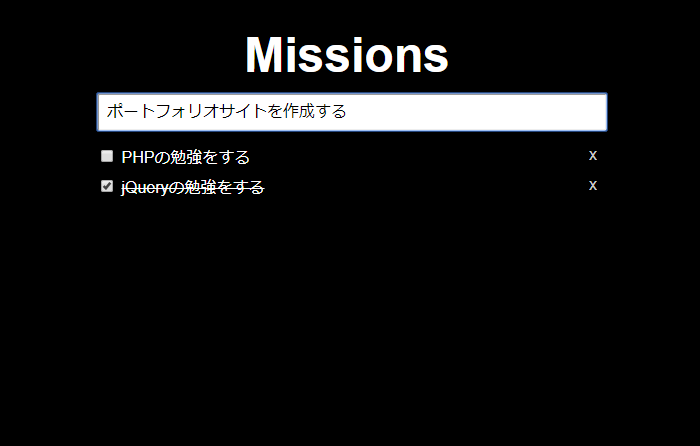
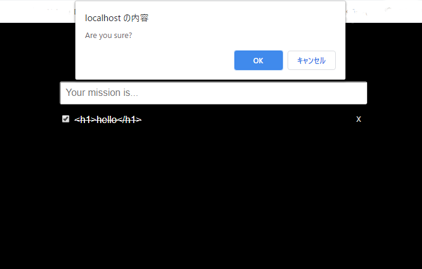

JavaScriptを用いて以下の機能を実装しました。
・タスク内容の反映時には文章がフェードインし、削除時にはフェードアウトするエフェクト
・×ボタンを押すと「Are you sure?」と内容を削除するか確認するアラートを表示させる



URL:https://mission.booktown.tokyo/
ソースコード:https://github.com/tusk2019/My-Missions
使用した技術：HTML/CSS/PHP/JavaScript/jQuery/SQL